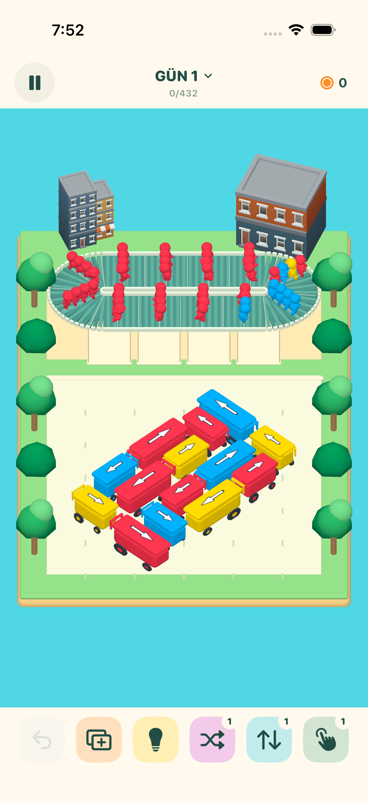
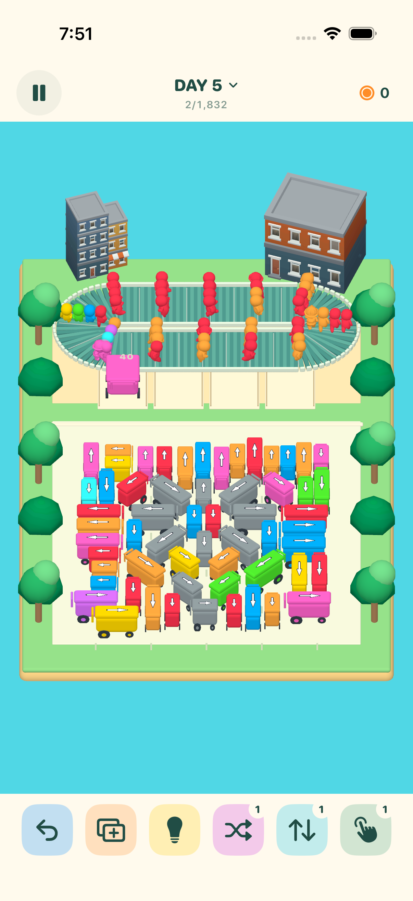

Yolu aç.
Arabaya dokun, ok yönünde hareket etsin. Önünü kapatan arabaları önce çıkar.
Biraz bulmaca. Bir top mutluluk.
Yakında iPhone ve iPad’de
Rengârenk müşteriler, dondurma arabalarıyla dolu bir sokak. Doğru hamleyi bul, renkleri eşleştir ve sıradakileri sevindir.

Gerçek oyun görüntüsü · iPhone
Okları takip et
Her arabanın bir yönü, her müşterinin bir rengi var. Doğru eşleşmeye yer aç.
Arabaya dokun, ok yönünde hareket etsin. Önünü kapatan arabaları önce çıkar.
Müşteriler bantta dolaşır. Aynı renk arabayı servis yerine getir, dondurmalarını alsınlar.
Stoku biten araba ayrılır. Servis yerleri dolmadan sıradaki renkler için plan yap.

Kendi güneşli rotan
Rotanı takip et, bulmaca arşivini keşfet veya alıştırmalarda özel kuralları öğren.
Sokak kalabalıklaştığında ipucunu dene, bir hamleyi geri al veya güçlendirici kullan. Oynayarak oyun parası kazan.
Oynamak için bağlantı gerekmez. İlerlemen cihazında saklanır; istersen kendi yedek dosyanı oluşturursun. Türkçe ve İngilizce. iOS / iPadOS 17 ve üzeri.
Scoop Street, App Store için hazırlanıyor.